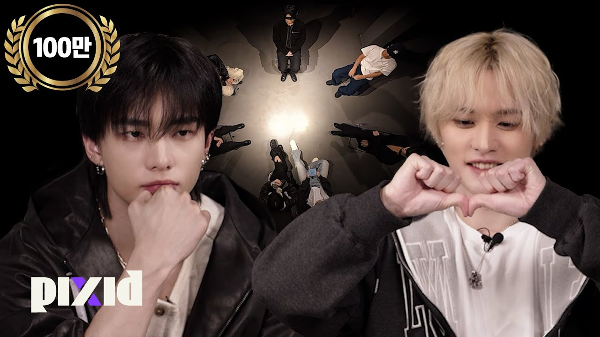

더퀘스트
자세히 보기
픽시드 오리지널 시리즈 〈더 퀘스트〉는 초기 기획 단계부터 포맷 설계와 구성, 메인 연출을 맡아 전 회차 제작 전반(제작, 촬영, 섭외 등)을 리드했습니다. 첫 회차는 스트레이 키즈 출연 회차로 100만 회 이상의 조회수를 기록했으며, OAP 디자인에도 전 과정에 참여해 프로그램의 톤앤매너와 브랜드 아이덴티티가 일관되게 구현되도록 했습니다. 특히 대부분 회차에 포함된 PPL을 기획, 구성, 반영, 현장 연출까지 일관되게 담당하며, 프로그램의 재미를 해치지 않으면서도 브랜드 메시지가 자연스럽게 전달되도록 완성도를 끌어올렸습니다.